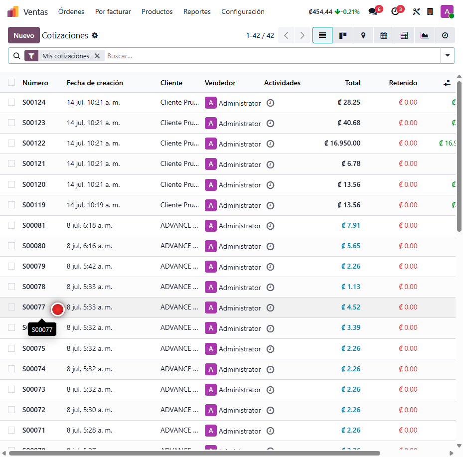
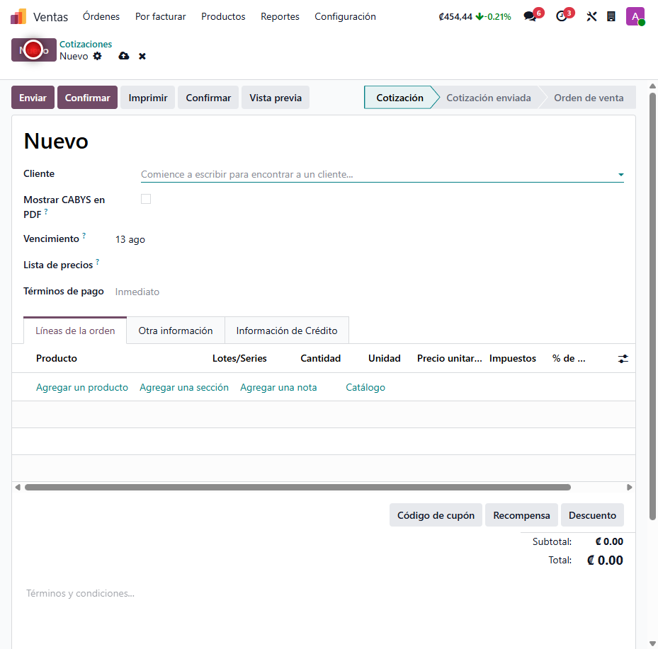
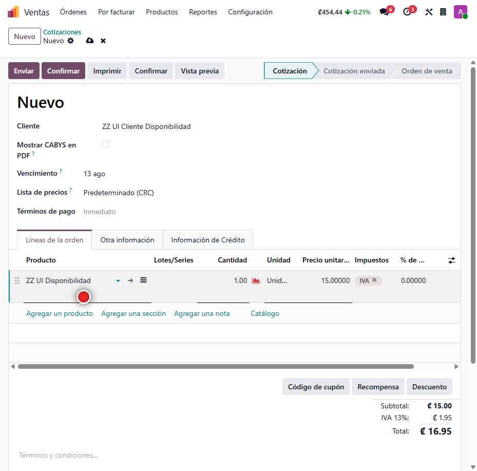
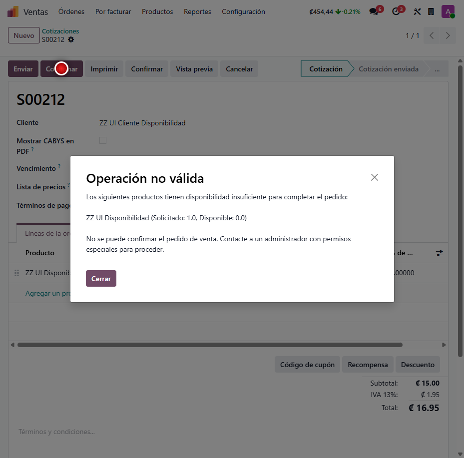

Control de Disponibilidad en Ventas
Evita que se confirmen pedidos de venta cuando los productos no tienen stock disponible. El sistema detiene la confirmación y detalla exactamente qué falta, con un permiso especial para que usuarios autorizados puedan omitir la restricción cuando el negocio lo requiere.
Capturas del proyecto
01 / 05




Vender lo que no existe genera entregas incumplidas y clientes molestos
En muchas empresas los vendedores pueden confirmar pedidos de productos que no están en bodega. Esto compromete inventario inexistente, genera promesas de entrega que no se pueden cumplir y obliga a correcciones manuales que consumen tiempo del equipo.
Este módulo valida la disponibilidad en el momento de confirmar el pedido: si algún producto almacenable no tiene stock suficiente en el almacén, detiene la confirmación y muestra el detalle de lo que falta. Los gerentes u otros usuarios autorizados conservan la flexibilidad de omitir la restricción cuando se trata de preventas o pedidos anticipados.
Funcionalidades clave
-
Validación al confirmar
Bloquea la confirmación si un producto almacenable no tiene stock suficiente.
-
Detalle claro del faltante
Muestra cada producto con la cantidad solicitada y la disponible.
-
Permiso de omisión
Usuarios autorizados pueden confirmar aunque no haya stock, para preventas.
-
Disponibilidad por almacén
Compara contra el stock real del almacén asignado al pedido.
-
Solo productos almacenables
Los servicios y bienes sin inventario se confirman sin restricción.
-
Cero configuración
Funciona apenas se instala; el permiso se asigna desde la ficha de usuario.
Tecnología detrás del producto
¿Tu equipo compromete inventario que no existe?
Integro esta validación en tu flujo de ventas y la adapto a tus políticas de bodega y preventa.